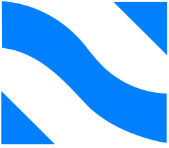
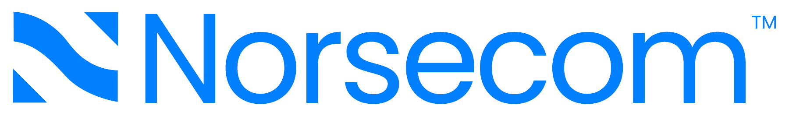

From Bengaluru
to orbit.
Testing the links that connect India.
Testing the links that connect India.


Advanced embedded systems, IoT and connectivity
solutions built for a smarter future.

Full-stack AI, built in Bengaluru.sandlogic.com
Test & MeasurementTechnology SystemsNetworks & Cybersecurity